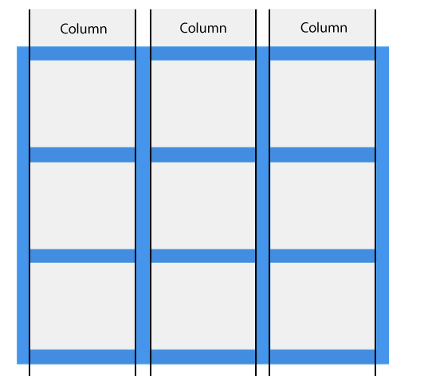
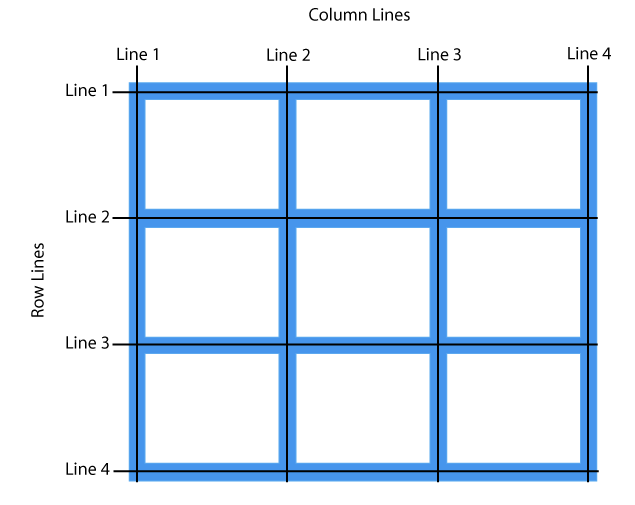

02_그리드 레이아웃
GRID(격자)속성은 FLEX(플렉스)속성과는 다르게 두 방향(가로, 세로)으로 레이아웃을 만들기 위한 시스템이다.
웹페이지 레이아웃 제작방법
- table
- float:left or right
- display:inline
- display:inline-block
- display:block
- display:table
- display:flex
- display:grid
- 다단 레이아웃(multi-column)
1. GRID Columns(열, 세로)

2. GRID Rows(행, 가로)
3. GRID Gap(여백)

4. GRID Line(기준선)

5. GRID Container(부모속성)
Grid layout에서 부모역할을 하기 위한 html태그요소이며 display:grid, display:inline-grid속성 값을 지정할 수 있다.
부모요소의 이름은 'wrap, wrapper, container', 자식요소의 이름은 'item'이라고 하며, 그리드는 column, row 아이템으로 구성된다.
6. GRID Item(자식속성)
Grid layout에서 부모요소의 자식요소들을 '아이템'이라고 하며, 아이템들을 병합하고자 할 때 열, 행번호, 영역의 이름을 따로 지정하여 설정할 수 있다.
css학습 참고사이트 - https://www.w3schools.com/css/css_grid.asp
실습1. 그리드 레이아웃 기본 개념잡기
item1
item2
item3
item4
item5
item6
item7
item8
item9
item10
item11
item12
실습2. 그리드 레이아웃 자식요소 병합하기
item1
item3
item4
item5
item6
item7
item9
item11
실습3. 그리드 레이아웃을 활용한 이미지 갤러리